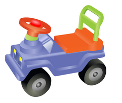
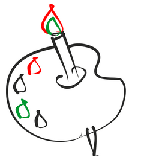

За рулем сижу довольный -
Ездить просто и легко!
Только руль чуть-чуть огромный
И педали далеко.
Мне купили паровозик,
Сразу два вагона возит.
Я включу его, и он
за собой везет вагона.
Вот бы мне в нем прокатиться,
Только жаль - не поместиться.

Нарисую я в альбоме,
Голубое море.
Белый парус над волною
Бьется на просторе.